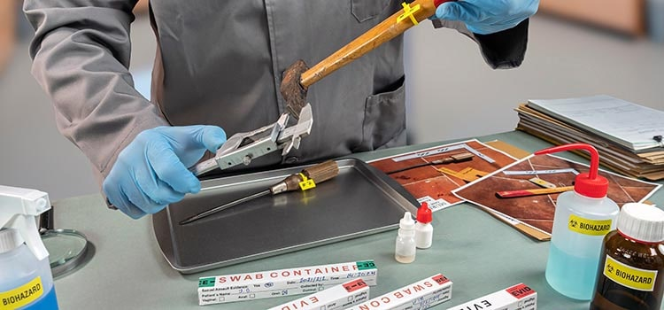

Analysis of softwares and hardwares
To start off Forensic science is an application of science principles that help you in criminal/civil law cases.
They mostly Analyze data on how it harms the victim and how they died..etc, the site above will give you more of a knowledge in Forensic science and what they do.
Common of these cases would be data about DN, traces of other chemicals that are possibly involved with the case.

The First Software: Sleuth Kit
It's a collection of command line tools.
Helps analyze disk images/help recover files from it.
It's used behind the scenes of Autopsy.
It also helps them train for the field in (Forensic Autopsy)
The Second Software: SIFT (SANS investigative forensic toolkit)
Used to help perform detailed digital forensic examinations in many different ways.
Can match any current incident response in any forensic tool suite.
organizer as it avoids evidence getting mixed up, with the systems being fairly easy to use.
It's not as pricey as the other forensic software on the market.
The Third Software: forensic toolkit

It can create a full disk image with a wide range of process data types.
Can help you get clearer pictures of the images/events. Including the location and the type of device used to capture the image.
It can make files/system information easier to read.
Can also help you locate, manage and also filter out the mobile data much easier too.
1. Fume Hoods are another technology as they help ensure the health of others and help them to ensure they are working in a safe environment by removing the chemicals in the air and aerosols from the work area.
2. Automated fingerprint recognitionTo get that perfect impression of print without compromising the fingerprint, and of course helps identify people, with it being used for a long time since the 1980s.
3. Drug testingTo identify unknown substances whether it be the pills, powder, or in liquid form as they can use a color test, in which to know what drug is represented in there.
This can be Orangized in various methods sicne the ones of the softwares and hardwares are may be just the few out of a lot others out thier but organizing them can help you find which one is the best to work with. Nad from my development I find that Sortingit form low complexity to high complexity is the best way to figure them out.